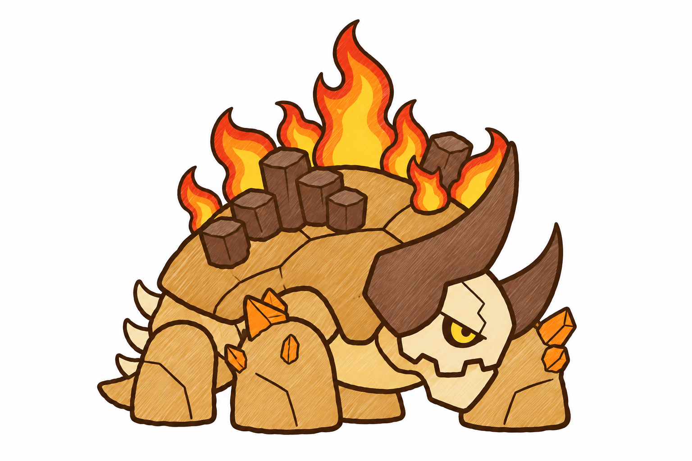
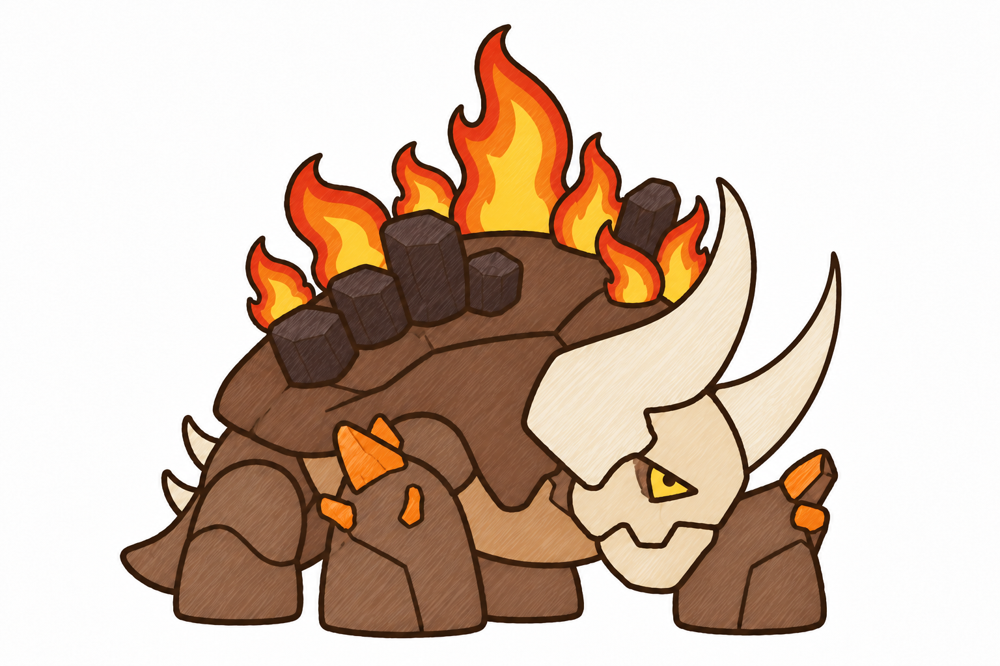
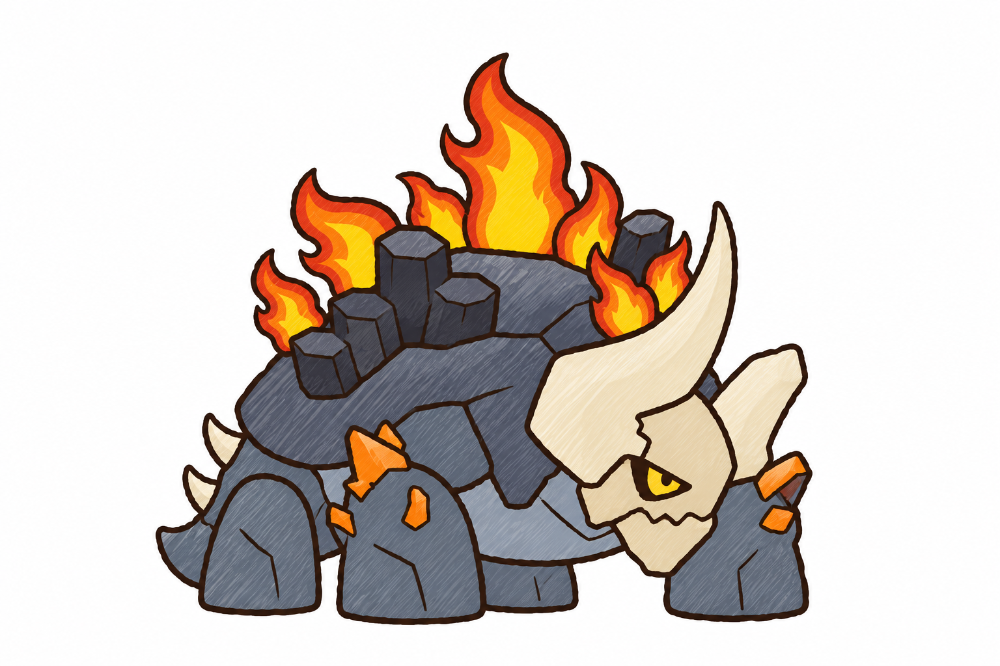
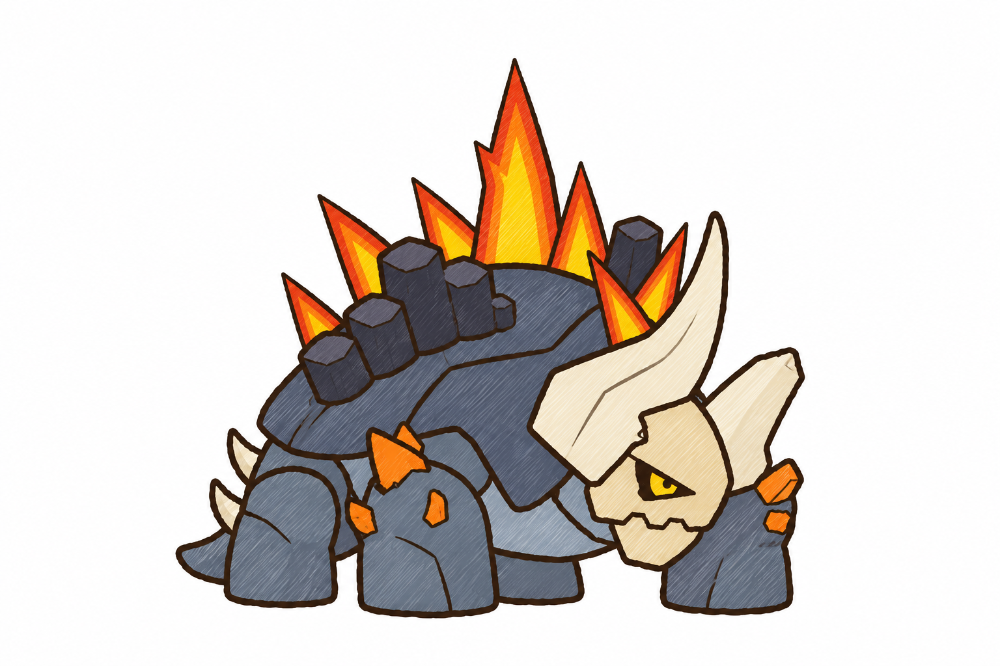
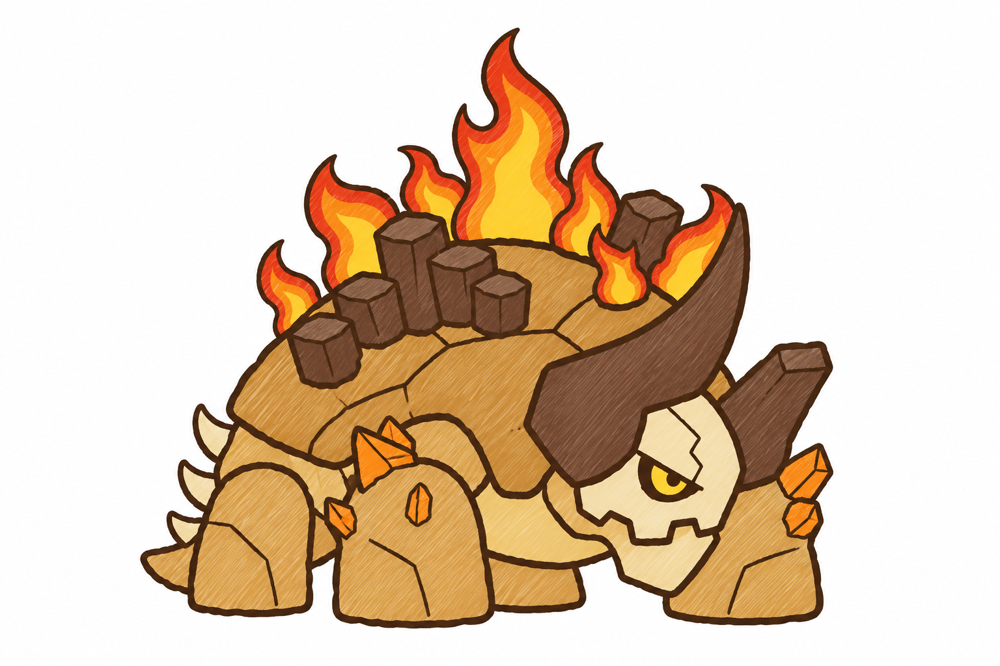
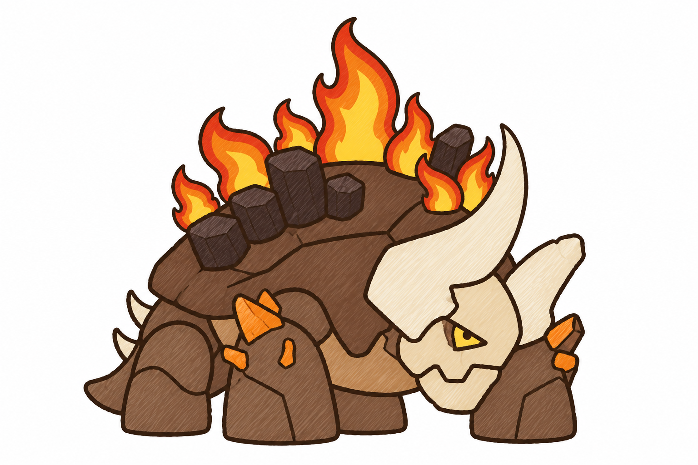
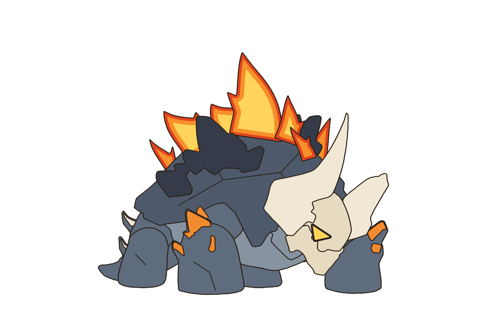
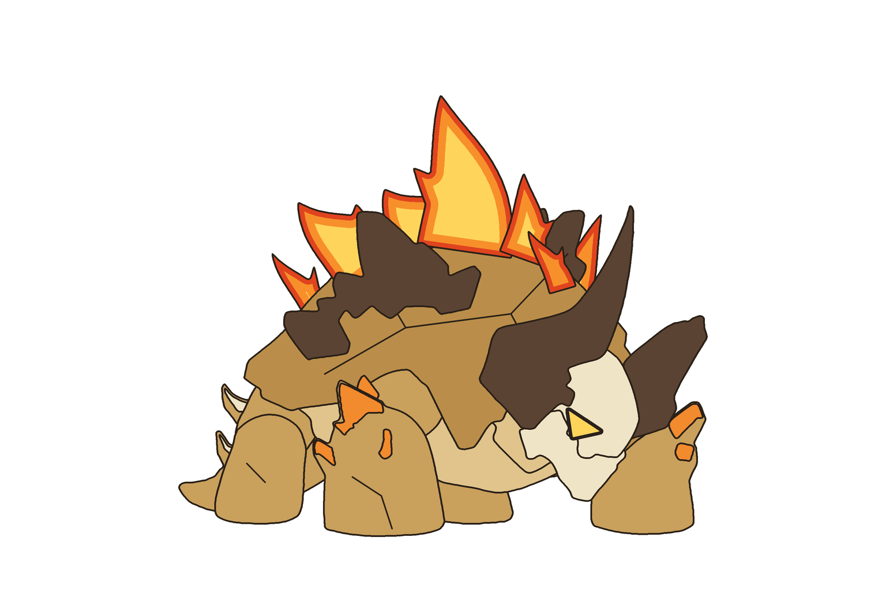
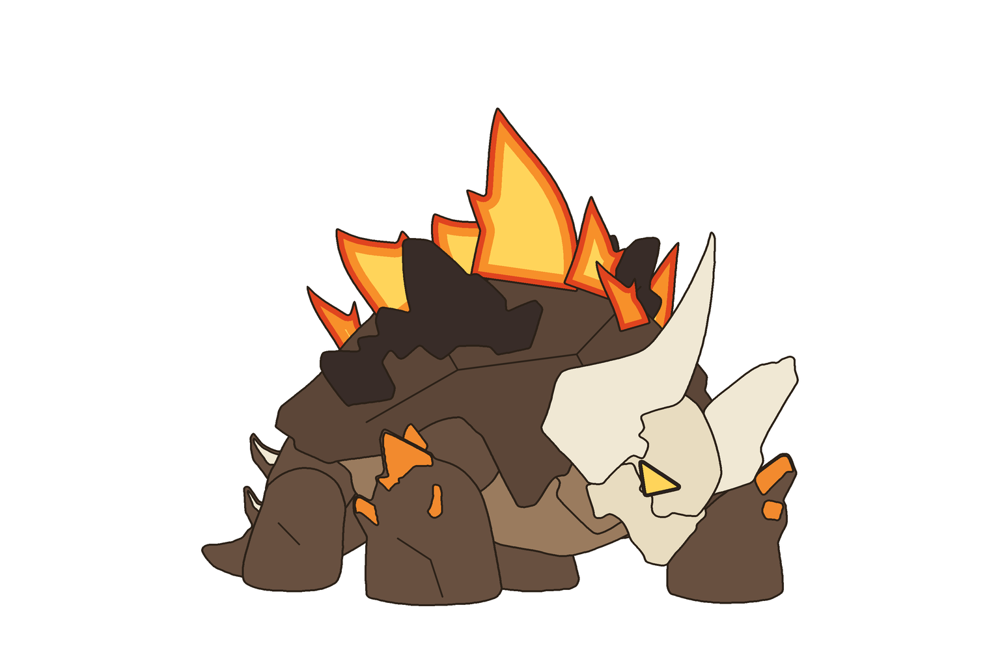

Giữ dáng con gốc (rùa golem bốn chân nhìn phải, đầu thấp phía trước, mặt sọ đá một mắt, hàm riêng, hai sừng nguyên mũi nhọn (sừng gần to cong, sừng xa nhỏ hơn), mai vòm có cụm cột đá, đuôi ngắn ba gai). Pha lê đỏ trên lưng → gai lửa; mắt → mắt lửa; pha lê nhỏ ở hai chân trước giữ là pha lê, đổi màu cam dung nham. Ba hướng màu là đề xuất của tôi.
Mai và chân xám lam, cột đá chàm than, mặt sọ + hàm ngà ấm, sừng và gai đuôi ngà nhạt.
Cùng màu A; lửa trên lưng là gai lửa thẳng, nhọn (thay cho ngọn lửa bùng có móc cuộn).
Mai và chân vàng son, cột đá và hai sừng nâu sẫm, mặt sọ + hàm kem.

Mai và chân nâu cà phê sẫm, cột đá nâu đen, mặt sọ + sừng ngà.







